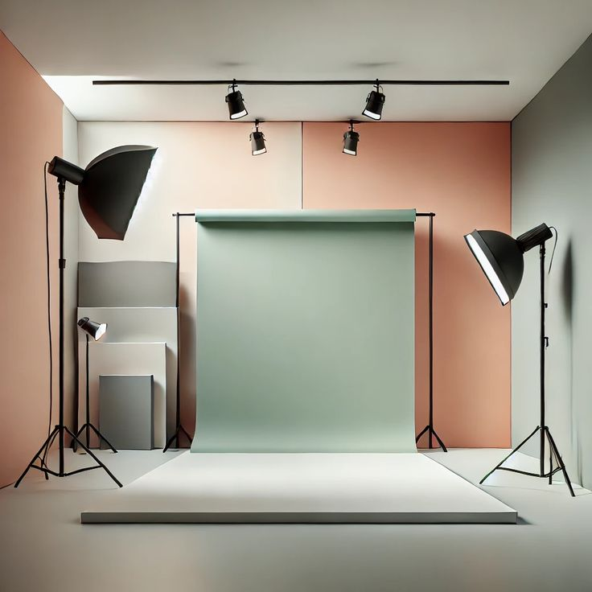
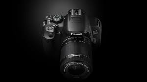
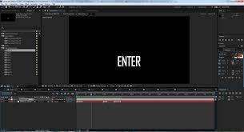

WELCOME
Our Portofolio of Creative Photography & Video Editing Team



Our Portofolio of Creative Photography & Video Editing Team


Duallens is a creative photography and video editing team focused on delivering high-quality visual storytelling. Our goal is to capture, craft, and edit moments that tell meaningful stories and create lasting memories through strong visuals and thoughtful editing. With a dedicated team of two creatives, we collaborate closely in every stage of the process—from planning and shooting to post-production and final delivery. This teamwork allows us to maintain a consistent visual style, pay attention to detail, and ensure each project reflects the client’s vision. Through our portfolio, we showcase our approach to storytelling, our technical expertise, and our commitment to producing visuals that are not only aesthetically pleasing but also impactful and authentic.
Our photographer specializes in capturing stunning images that tell a story. With a keen eye for detail and a passion for creativity, they bring your vision to life through the lens.
Our video editor is skilled in transforming raw footage into captivating videos. With expertise in various editing techniques and software, they ensure that every project is polished and engaging.
If you have any questions or need assistance, feel free to reach out to us. We're here to help!
Email:
Instagram: